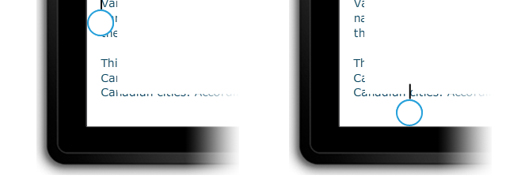
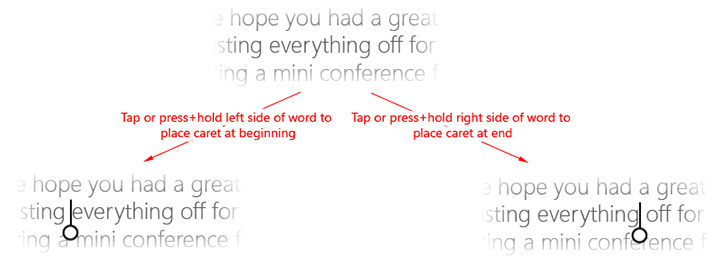
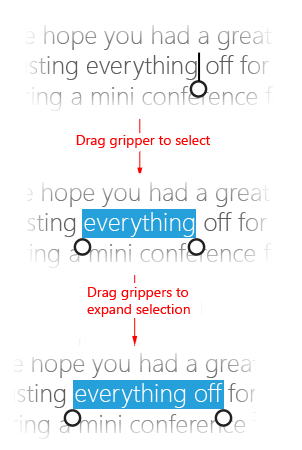
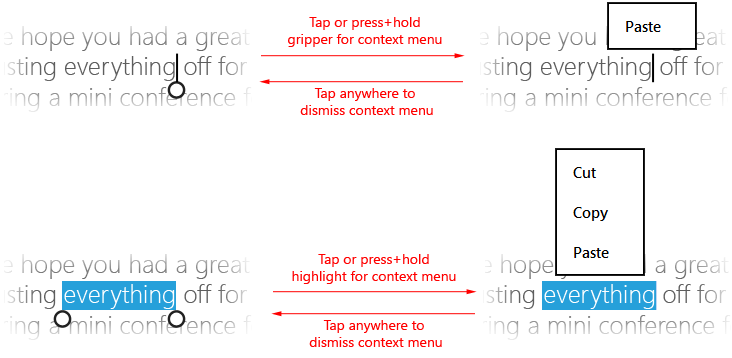
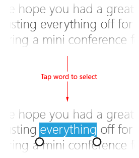
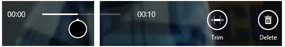
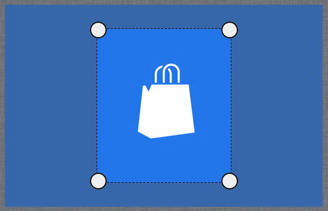

Selecting text and images
This article describes selecting and manipulating text, images, and controls and provides user experience guidelines that should be considered when using these mechanisms in your apps.
Important APIs: Windows.UI.Xaml.Input, Windows.UI.Input
Dos and don'ts
Use font glyphs when implementing your own gripper UI. The gripper is a combination of two Segoe UI fonts that are available system-wide. Using font resources simplifies rendering issues at different dpi and works well with the various UI scaling plateaus. When implementing your own grippers, they should share the following UI traits:
- Circular shape
- Visible against any background
- Consistent size
Provide a margin around the selectable content to accommodate the gripper UI. If your app enables text selection in a region that doesn't pan/scroll, allow a 1/2 gripper margin on the left and right sides of the text area and 1 gripper height on the top and bottom sides of the text area (as shown in the following images). This ensures that the entire gripper UI is exposed to the user and minimizes unintended interactions with other edge-based UI.

Hide grippers UI during interaction. Eliminates occlusion by the grippers during the interaction. This is useful when a gripper isn't completely obscured by the finger or there are multiple text selection grippers. This eliminates visual artifacts when displaying child windows.
Don't allow selection of UI elements such as controls, labels, images, proprietary content, and so on. Typically, Windows applications allow selection only within specific controls. Controls such as buttons, labels, and logos are not selectable. Assess whether selection is an issue for your app and, if so, identify the areas of the UI where selection should be prohibited.
Additional usage guidance
Text selection and manipulation is particularly susceptible to user experience challenges introduced by touch interactions. Mouse, pen/stylus, and keyboard input are highly granular: a mouse click or pen/stylus contact is typically mapped to a single pixel, and a key is pressed or not pressed. Touch input is not granular; it's difficult to map the entire surface of a fingertip to a specific x-y location on the screen to place a text caret accurately.
Considerations and recommendations
Use the built-in controls exposed through the language frameworks in Windows to build apps that provide the full platform user interaction experience, including selection and manipulation behaviors. You'll find the interaction functionality of the built-in controls sufficient for the majority of Windows apps.
When using standard Windows text controls, the selection behaviors and visuals described in this topic cannot be customized.
Text selection
If your app requires a custom UI that supports text selection, we recommend that you follow the Windows selection behaviors described here.
Editable and non-editable content
With touch, selection interactions are performed primarily through gestures such as a tap to set an insertion cursor or select a word, and a slide to modify a selection. As with other Windows touch interactions, timed interactions are limited to the press and hold gesture to display informational UI. For more information, see Guidelines for visual feedback.
Windows recognizes two possible states for selection interactions, editable and non-editable, and adjusts selection UI, feedback, and functionality accordingly.
Editable content
Tapping within the left half of a word places the cursor to the immediate left of the word, while tapping within the right half places the cursor to the immediate right of the word.
The following image demonstrates how to place an initial insertion cursor with gripper by tapping near the beginning or ending of a word.

The following image demonstrates how to adjust a selection by dragging the gripper.

The following images demonstrate how to invoke the context menu by tapping within the selection or on a gripper (press and hold can also be used).

Note These interactions vary somewhat in the case of a misspelled word. Tapping a word that is marked as misspelled will both highlight the entire word and invoke the suggested spelling context menu.
Non-editable content
The following image demonstrates how to select a word by tapping within the word (no spaces are included in the initial selection).

Follow the same procedures as for editable text to adjust the selection and display the context menu.
Object manipulation
Wherever possible, use the same (or similar) gripper resources as text selection when implementing custom object manipulation in a Windows app. This helps provide a consistent interaction experience across the platform.
For example, grippers can also be used in image processing apps that support resizing and cropping or media player apps that provide adjustable progress bars, as shown in the following images.

Media player with adjustable progress bar.

Image editor with cropping grippers.